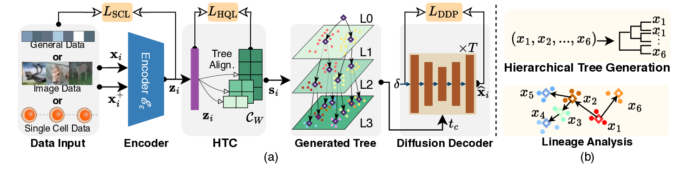
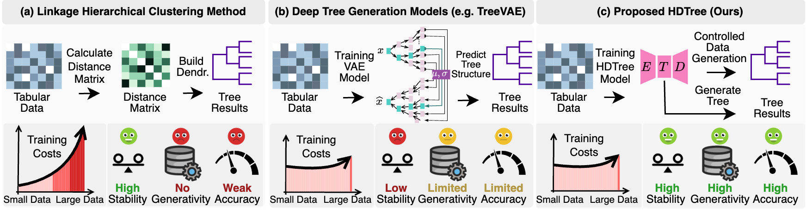
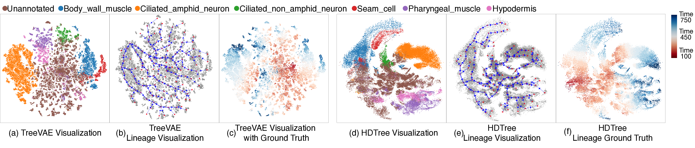
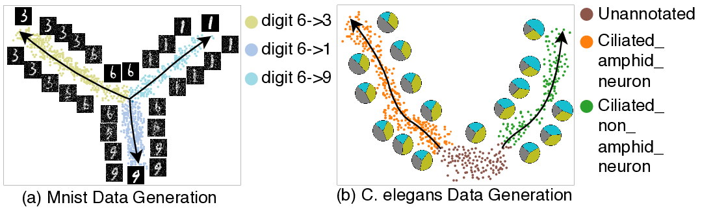

Unified Hierarchical Codebook
A shared vector-quantized tree codebook avoids branch-specific neural modules and decouples tree depth from network size.
Generative Modeling of Cellular Hierarchies for Robust Lineage Inference
HDTree learns tree-structured latent representations with a unified hierarchical codebook and validates inferred cell lineages through diffusion-based generation conditioned on hierarchical paths.

The paper studies hierarchical representation learning for cellular differentiation, where the goal is not only to cluster cells but also to infer robust developmental trajectories and validate them generatively.
A shared vector-quantized tree codebook avoids branch-specific neural modules and decouples tree depth from network size.
A path-conditioned diffusion decoder reconstructs and generates samples along learned hierarchical trajectories.
The learned tree is transformed into a weighted graph, enabling shortest-path inference between progenitor and differentiated states.
Existing hierarchical methods either lack generative validation or rely on branch-specific modules that become unstable for deep or sparse hierarchies.

Representative figures from the paper: the model architecture, lineage inference case study, and tree-conditioned generation.


The paper evaluates tree performance, clustering performance, reconstruction, lineage alignment, ablations, and computational cost across general and single-cell datasets.
On MNIST, HDTree reports DP 91.9, LP 96.6, ACC 96.6, and NMI 92.4, while improving reconstruction metrics over TreeVAE.
On Limb, HDTree reaches DP 41.0, LP 57.2, ACC 55.0, and NMI 46.6 under the paper evaluation setting.
On C. elegans, HDTree improves temporal-neighborhood consistency over TreeVAE by more than 4 points in later developmental windows.
Pointers to the paper discussion, public artifacts, and outreach material. The OpenReview entry will be linked here once the public forum page is available.
Official conference page for the Forty-third International Conference on Machine Learning.
ICML 2026 OpenReview venue. The HDTree paper forum link will be added once it is public.
ICML 2026 accepted-authors group on OpenReview.
Chinese technical article draft introducing the HDTree paper, method, figures, and experiments.
Released MNIST and Limb checkpoints with logs, checksums, and model-card notes.
The public repository is a minimal reproducibility package for MNIST and Limb. Other paper datasets and lineage case studies are not included in this release.
| Released checkpoint | DP | LP | ACC | NMI | Notes |
|---|---|---|---|---|---|
| MNIST | 0.93262 | 0.97310 | 0.97310 | 0.92999 | Representative single-run checkpoint |
| MNIST reconstruction validation | 0.93454 | 0.97380 | 0.97380 | 0.93277 | 7000 validation samples, reconstruction loss 44.97935, log likelihood -13.98696 |
| Limb | 0.41029 | 0.58370 | 0.52860 | 0.49042 | K=10, batch size 1000, exaggeration 0.5, nu 0.3 |
The README contains full setup, data placement, training, and checkpoint validation instructions.
pip install -r requirements.txt
scripts/smoke_test.sh
scripts/train_mnist.sh
scripts/train_limb.shpip install huggingface_hub
huggingface-cli download zelinzang/HDTree-ICML-checkpoints --local-dir .
scripts/validate_checkpoint.sh mnist checkpoints/mnist/hdtree_mnist_best_epoch59_acc0.97570.pthUse the final proceedings citation when it becomes available.
@inproceedings{zang2026hdtree,
title = {HDTree: Generative Modeling of Cellular Hierarchies for Robust Lineage Inference},
author = {Zang, Zelin and Li, WenZhe and Xu, Yongjie and Yu, Chang and Chi, Changxi and Zhou, Jingbo and Lei, Zhen and Li, Stan Z.},
booktitle = {International Conference on Machine Learning},
year = {2026},
url = {https://github.com/zangzelin/code_HDTree_icml}
}